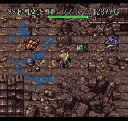
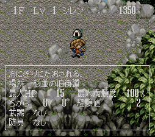
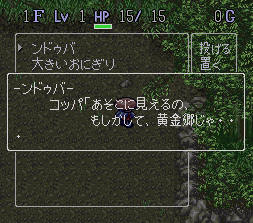
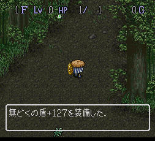
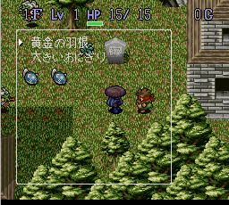
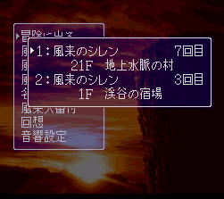
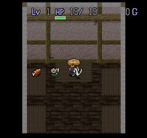
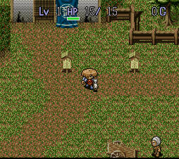
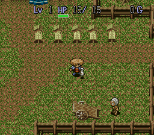

风来的西林SFC ～秘密写真馆～ ◆ BUG？怪奇现象？（PART.7） ◆
 挂轴洞窟99F的黄金都市场景，大家都见识过了。  哈哈，被饭团KO了……  ンドゥバ的说明原来是这样子写的……  无どくの盾强化超越极限，竟然有127！应该是修改的产物。  道具栏变为全透明化了，而且西林的颜色……难道这就是传说中的风来魔人？！  地上水脉之村？哪会有这个村庄的存在？  仓库中的花，幻觉？  少了2个番付牌，谁吃掉了？  这次多了1个番付牌，难道还有个隐藏迷宫？！